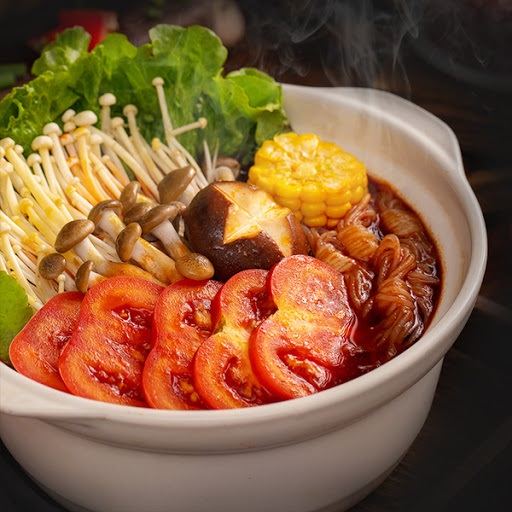
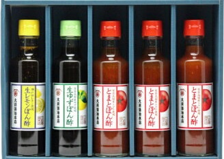

お問い合わせ
調理用トマトをご存知でしょうか。
調理用と生食用との違い。
トマトといえば、日本では生食が基本になることが多いですが、 調理に向き美味しいトマトのことを調理用トマトと呼びます。
調理用トマトは、加工用トマトの1種ではありますが、おもに加熱調理に使われることが多いトマトを指します。つまり、ジュースや缶詰といった加工品ではなく、 炒め物やグリルなどの料理にして楽しむトマトということです。
日本ではトマトといえば、生のまま切って食べることが多い野菜です。ところが、海外では加熱調理して食べることが多いのです。調理用トマトは、炒め物やスープ、グリルなど様々な料理に使われるトマトです。 生で食べるよりも、加熱調理して食べることを目的としているため、 調理用トマトの場合、生のままで食べると風味が薄く、また果肉も硬くて食べにくい印象があります。

その分、加熱した時の食感や旨みの爆発力がすごいのが特徴です。
また生のトマトは冷蔵庫で保存しても次第に栄養が失われてしまいます。常温保存では２～３日で３割以上のビタミンＣが減少してしまうのもあるほど。生食用トマトは長距離輸送を経て店頭に並ぶことも多いので栄養素の多少の減少には目をつぶらざるを得ません。
しかし「加工用トマト」は収穫したその日のうちに加工品になりますから、栄養成分が優れているのは当然。またリコピンやビタミンＥは熱に強いので栄養価が必要以上に壊れている心配もありません。

株式会社 コッカファーム 株式会社 住吉
〒739-1101
広島県安芸高田市甲田町高田原1373-2
TEL:0826-45-7005
FAX:0826-45-3255
Copyright（C）All Rights Reserved.